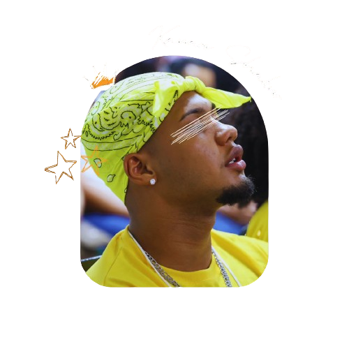

 Eu sou Kauan Shakur, um rapper que começou na cena em 2016, sempre buscando expressar minhas vivências e minhas ideias sobre questões raciais e sociais através da música. Minha paixão pela arte vem desde as primeiras composições, e mesmo enfrentando pausas e dificuldades, nunca deixei de acreditar no poder da minha voz. Além do rap, também me aventurei no breakdance e participei de movimentos como a União Hip Hop, que me deram espaço para crescer. Hoje, minhas letras são o reflexo da minha jornada, marcadas por resistência, perseverança e vontade de trocar ideia com o mundo.
 @kauan_shakur_mc
@kauan_shakur_mc @kmc79
@kmc79 @kauan shakur mc
@kauan shakur mc